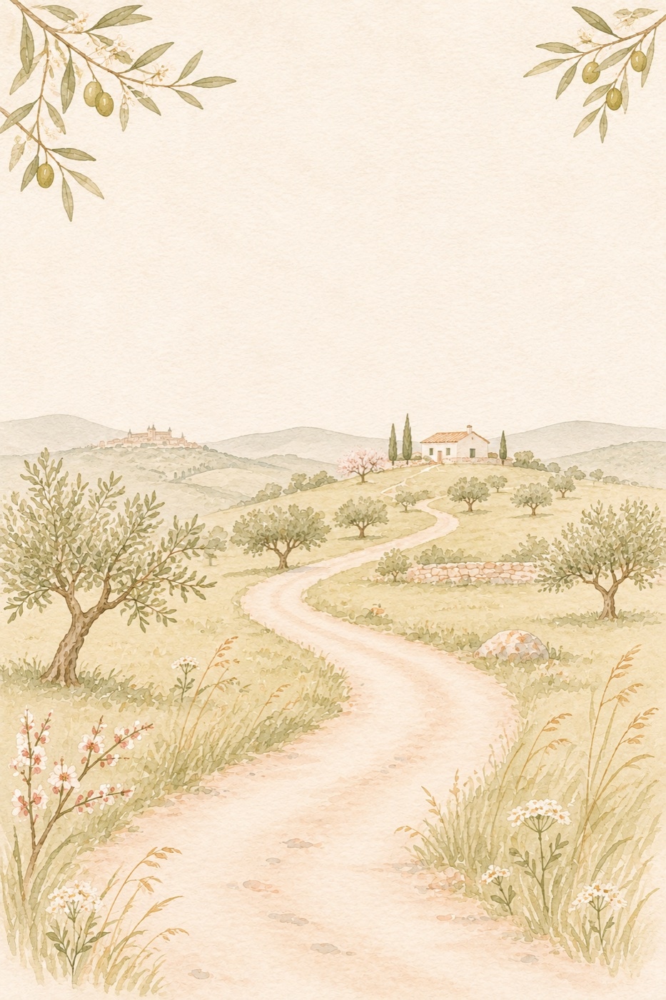

CARMEN Y ALFONSO · 10 ABRIL 2027
Cómo llegar
Primero nos encontraremos en la iglesia y después seguiremos juntos hasta la finca.

LA CEREMONIA · 12:30 H
Parroquia de Santa María Magdalena
Avenida de la Iglesia, 1628223, Húmera, Madrid
12:30 h
LA CELEBRACIÓN
La Hacienda by El Campillo
Carretera M-600, km 3,40028280, San Lorenzo de El Escorial, Madrid
14:30 / 15:00 h
SERVICIO DE AUTOBÚS
Viajamos juntos
IDA
Parroquia de Santa María Magdalena → La Hacienda by El Campillo
Salida a las 14:00-14:30
VUELTA
Desde La Hacienda by El Campillo · 00:00
Autobús a Pozuelo (Av. de Europa 26) y otro a Moncloa (Paseo de Moret 1)